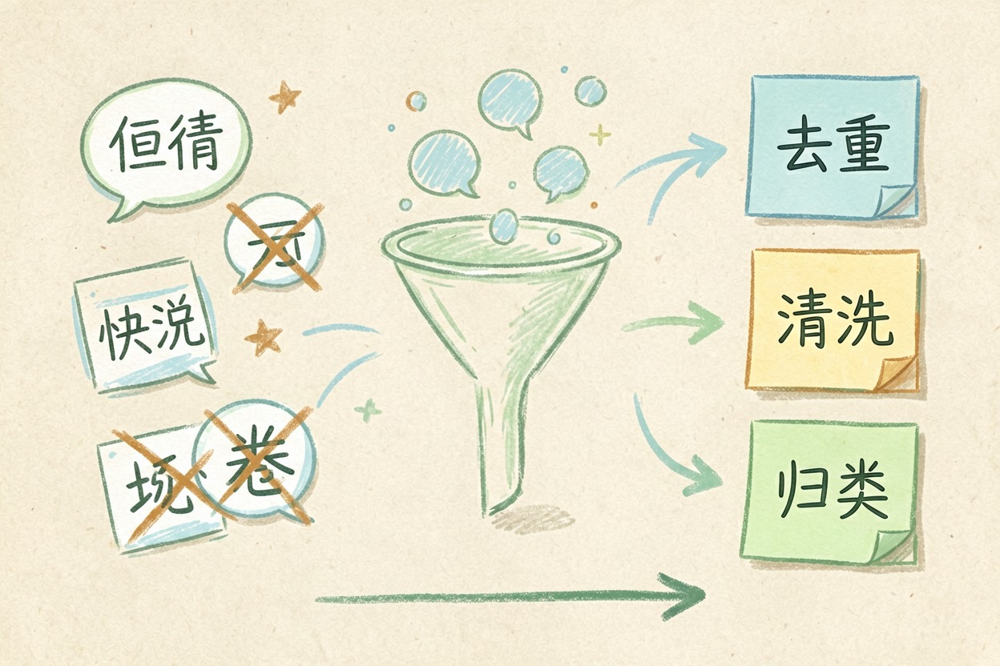
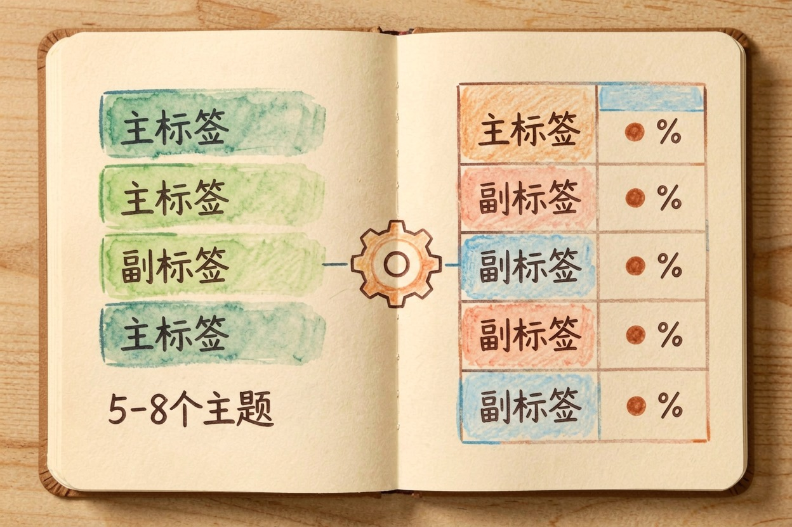
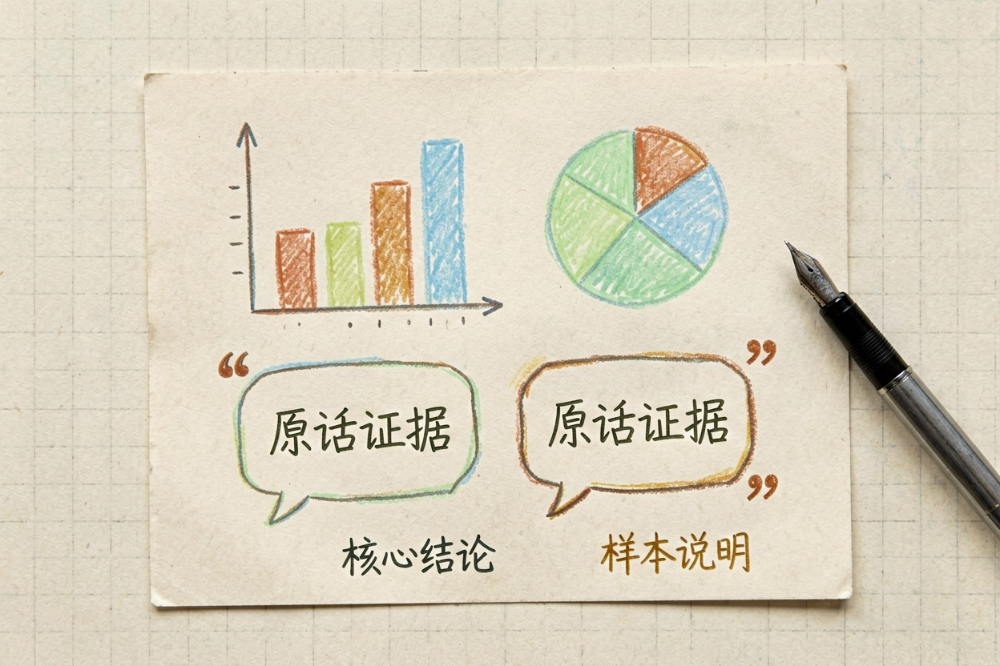

用 AI 分析问卷？开放题也能自动归类 — Learntide
收上来几百份问卷，选择题好办，往往真正让人头疼的是那一堆写完就再没动过的开放题。
ai分析问卷：选择题好算开放题靠归类

ai分析问卷，选择题那是模型的强项，计数、交叉、画图都快。真正费劲的是开放题，一堆自由发挥的文字，靠人手读不完。
开放题的解法不是逐条精读，而是先归类。让模型把相似回答归到同一标签下，你再看每个标签有多少人，趋势就出来了。
不少人卡在「开放题太多读不动」就跳过。跳过等于扔掉最值钱的意见。用归类替代通读，几百条也能半小时内看出门道。
样本量小就别硬分。只有三十份还拆八组，每组三四人，结论没有意义。工具先小试。丢二十份看它归类稳不稳，再上全量省得返工。
清洗数据再做分析

先删无效卷。填秒完的、整页选同一个选项的、开放题留白的，先挑出来。脏样本不去掉，结论会被拉偏。
选项编码要统一。同一道题「满意」有的写「很满意」，模型可能当两种。先归成一套标准词再喂。
抽样先读几十份。你亲手看过的原文，是后面判断模型归类准不准的标尺。没这步，你根本不知道它归得对不对。
时间字段统一。有的填日期有的填「上周」，模型分桶会乱，先归成一种。开放题也先去重。同一人复制粘贴的多条，留一条，否则占比被注水。
给开放题打标签的提示词

把开放题文本贴进下面这段：
你是问卷分析助手。请给以下开放题回答打标签：
【粘贴回答，一行一条】
要求：
1 先归纳出 5 到 8 个高频主题，作为标签
2 每条回答标一个主标签，可加一个副标签
3 输出表格：原句、主标签、副标签
4 末尾给每个标签的人数占比
5 不要合并语义不同的回答，宁可多留标签跑完抽十条回看。标签和原文对得上，说明归得稳。对不上就让它把标签定义写细。
标签太碎就合并。二十个标签看花眼，让模型归成五六个大类的更顺手。
把结果汇成一份报告
选择题直接出图。占比、均值、交叉表，让模型生成表格和简短结论，你贴进汇报就行。
开放题挑代表句。每个标签下选两三条原话当证据，比干巴巴的数字更有说服力。读者信原话胜过信你的总结。
最后给一句总判断。数据说清楚「用户最在意什么、最不满什么」，这一句才是汇报里被记住的。
报告开头写限制。说清样本量和回收率，读者才不会把结论当真理。图表别太多。三张讲清主线的，胜过十张没人看的。
收尾提醒与常见坑
别全信模型的归类。它有时会按字面硬凑标签，把其实不同的回答塞一起。你过一遍标签定义就现形。
也别只报好评。开放题里的抱怨往往最该上报，模型倾向挑顺的写。你主动让它把负面标签也列全。
敏感题单独处理。涉及收入的开放题，汇报前先脱敏再引用原话。结论要可行动。光说「大家不满意」没用，补一句「优先修登录」才值钱。
最后一步最该做：先抽看几十份原文再信它。别把 ai分析问卷 当黑盒，归类跑偏你比模型更早发现。
本文信息核对于 2026-08-08。AI 产品的价格、免费额度与功能变动频繁，实际以各工具官网当前说明为准。